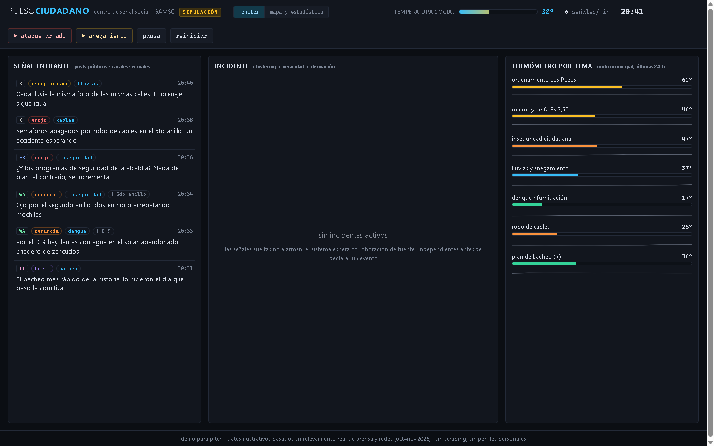
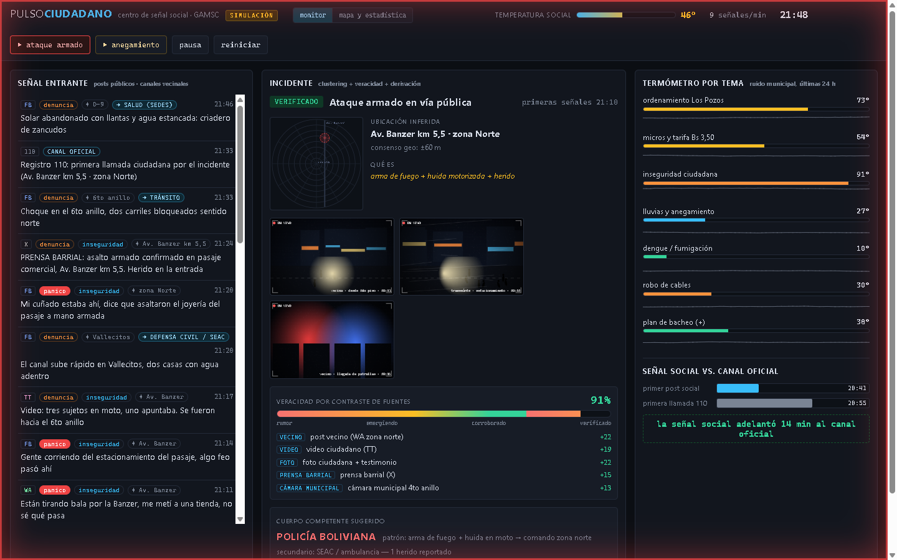
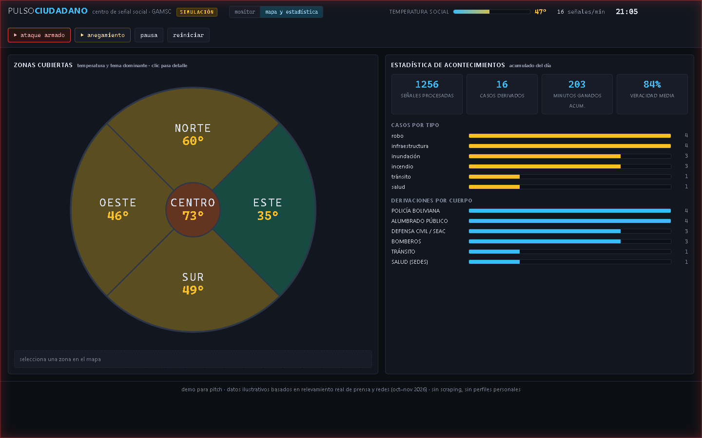

Diario · 3 de noviembre de 2026 · noche
La idea: Pulso Ciudadano
La entrada anterior quedó pendiente en lo único que importa: qué presentar en el pitch. Ya está definido. Se llama Pulso Ciudadano y es un monitor de señal social para la alcaldía.
La premisa sale de algo que pasa todos los días: ante un asalto, una riada o un choque, la gente postea en Facebook y en los grupos de WhatsApp mucho antes de marcar el 110. Esa señal existe, es pública y hoy nadie la lee de forma sistemática. Pulso Ciudadano la junta, la cruza entre fuentes independientes y, cuando la corroboración alcanza, deriva la alerta al cuerpo que corresponde: policía, defensa civil, tránsito o salud.
Los datos no son inventados. Ayer medimos a mano el ruido municipal en prensa y redes: el reel del operativo de Los Pozos juntó unas 41 mil reacciones y 2.800 comentarios, y el tema de la inspección de micros llegó a 8,8 mil reacciones en 12 horas. El demo hace replay de esas curvas reales. La línea del pitch escribe sola: «esto ya lo medimos a mano; el producto es eso mismo, en tiempo real».
El riesgo de la idea es que suene a otro dashboard de social listening, una categoría que ya existe. La diferencia que vamos a defender es el circuito: alerta, cuerpo responsable, acuse. Y la métrica que se muestra en la demo es minutos ganados: la hora del primer post contra la hora de la primera llamada al 110. En el escenario armado de la simulación son 14 minutos de ventaja para el cuerpo de seguridad.



El demo es una página estática dentro de este mismo sitio (puede abrirse acá). Sin backend, sin scraping, sin NLP: los datos van horneados en un archivo de JavaScript, así funciona igual desde un pen-drive si el wifi de la plaza falla. Hay dos botones de escenario para el presentador: ataque armado y anegamiento. Se dispara delante del jurado y el tablero reacciona en vivo.
Vale la aclaración honesta: el mock miente a favor de la historia y el pitch dice la verdad sobre la mecánica. Lo que se ve son datos ilustrativos armados a mano sobre el relevamiento real; lo que se vende es el mecanismo, que sí existe en papel.
Dato de equipo: quedó unipersonal. Se había acordado una dupla en el momento, pero la otra persona no volvió a aparecer, así que su tarjeta salió de la portada. El pitch de 3 minutos es hoy a las 20:30.